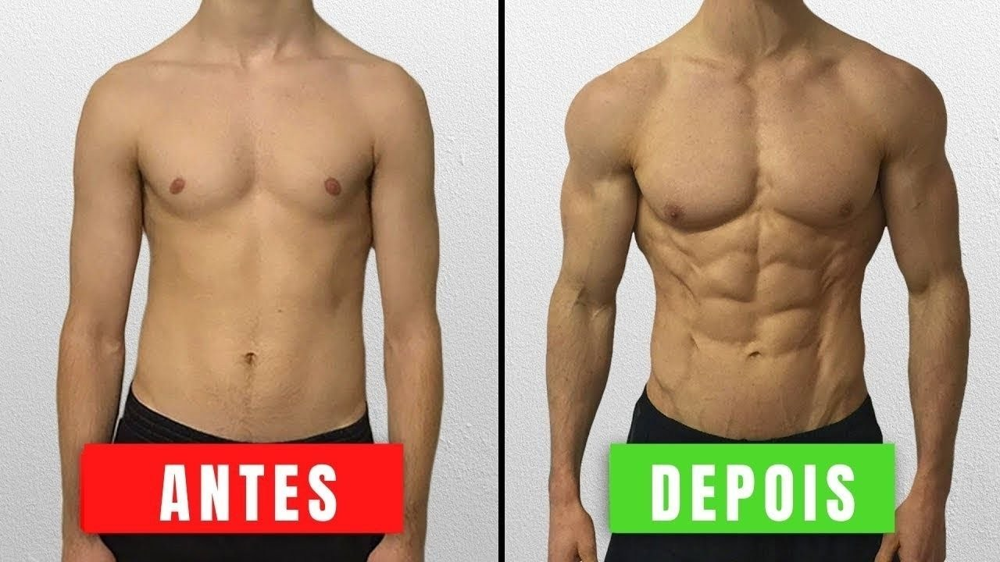
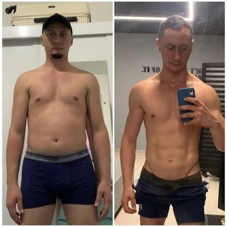

Equilíbrio e saúde, do acordar ao dormir
Seu corpo no prumo.
Você conta peso, altura, esportes e rotina. O Prumo calcula seu IMC, monta um treino de academia quando você ainda não faz, encaixa tudo nos seus horários e fecha com uma dieta sem os alimentos que você não gosta.
Leva uns 5 minutos. Seus dados ficam só neste navegador.
Como o plano é montado
- Conta e IMCPeso e altura no cadastro. O IMC aparece enquanto você digita.
- Seus esportesMarque quantos quiser e a frequência de cada um.
- Treino prontoNão faz musculação? Já deixamos um treino de academia montado.
- Rotina e sonoDa hora que acorda até a hora que dorme, para encaixar treino e refeições.
- Academias pertoQuer um esporte novo? Busca pela sua cidade e bairro, com contato.
- Dieta do seu gostoEscreva o que não come. O cardápio é montado sem esses alimentos.
Exemplos de antes e depois
Imagens ilustrativas de mudanças com treino e dieta. Não são resultados de usuários do Prumo.


Etapa 1
Crie sua conta
Etapa 2
Quais esportes você faz?
Marque todos que pratica hoje. Pode ser mais de um.
Etapa 3
Fiz um treino de academia pra você!
Você não marcou musculação, então montamos um treino para iniciantes com base no seu IMC.
Fiz um treino de academia pra você! Quer que eu aplique na sua rotina?
Opcional
De qual parte do corpo você mais quer perder gordura?
Pode pular. Se escolher, reforçamos exercícios para essa região.
Gordura localizada não sai só treinando a região: ela diminui com o corpo todo, pelo déficit de calorias. O que o treino faz é fortalecer e dar forma à área enquanto isso acontece.
Etapa 4
Como é o seu dia, da manhã à noite?
Use um dia útil comum.
Etapa 5
Quer começar outro esporte?
Diga onde você mora e mostramos os lugares perto, com o contato deles.
Etapa 6
Sua dieta, sem o que você não gosta
Seu plano